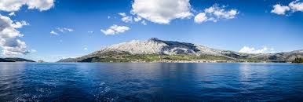

Wyspa Hvar jest długa (68 km) i wąska (4 do 10,5 km). Powierzchnia wynosi 297,38 km², a liczba mieszkańców 11,5 tys. Długość linii brzegowej wynosi 270,0 km. Odbijająca od lądu stałego na wysokości miasta Drvenik, wyspa rozciąga się między Bracem a Korculą, na linii wschód–zachód. Od północy omywa ją Hvarski kanał, a od południa kanały Šćedrovski, Korčulanski i Neretvanski. Najwyższy szczyt wyspy to Sveti Nikola (626 m n.p.m.). Po północnej stronie wybrzeża występują półwyspy i zatoczki, natomiast południowy brzeg jest stromy i skalisty.
Wyspa porośnięta jest roślinnością śródziemnomorską (makią), a także lawendą dlatego też Hvar znana jest również jako "lawendowa wyspa", ze względu na sadzoną masowo lawendę, która jest jednym z głównych źródeł dochodów wyspy.
Hvar jest znany z niebezpiecznych i krętych dróg. Chorwaci mają nawet swoje powiedzenie, jeśli chcą komuś źle życzyć: "obyś zginął na drogach Hvaru".
Największe w Chorwacji nasłonecznienie (średnio 2 724 godz. rocznie) powoduje że wyspa jest atrakcyjna nawet zimą.
Na Hvarze nie ma żadnych rzek ani jezior, a roczna suma opadów wynosi mniej niż 800 mm. Do tradycyjnych zajęć ludności należy rybołówstwo oraz uprawa winnej latorośli, oliwek, fig, a także lawendy i rozmarynu. Bardziej intratne źródło utrzymania to turystyka, którą też można nazwać „tradycyjną”, jako że rozwija się już od ponad 140 lat (pierwszą organizację turystyczną założono w 1868).
W 2008 krajobraz kulturowy wyspy Hvar został wpisany na listę światowego dziedzictwa UNESCO pod nazwą Równina Starego Gradu.
Największe miejscowości na wyspie: